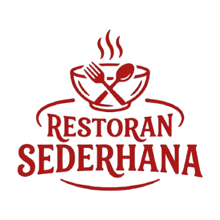

Ulasan dari Andi
Makanan di sini benar-benar membawa saya kembali ke masa kecil.

Autentik, Lezat, dan Berkesan
Temukan cita rasa autentik yang telah kami wariskan selama tiga generasi.
Restoran Sederhana didirikan pada tahun 1990 dengan satu misi sederhana: menyajikan masakan autentik yang membawa kenangan.
Kami tidak hanya menyajikan makanan, kami menyajikan pengalaman. Setiap suapan adalah perjalanan rasa yang dirancang dengan cinta dan keahlian.
Restoran Sederhana
Malang, 65152
Makanan di sini benar-benar membawa saya kembali ke masa kecil.
Pelayanan yang ramah dan suasana yang nyaman. Sangat recommended!